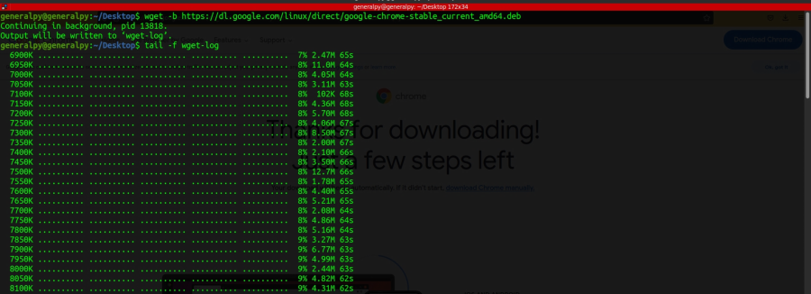

wget is a program which is used to download files from http, https and ftp sites. We can download multiple files, limit bandwidth, pause downloads, mirror sites and can do a lot of things using wget.
Simple wget syntax is :
wget urlThe downloaded file will be in current directory.
To change download path, use -P option followed by path.
To limit download speed, use --limit-rate option followed by speed. By default wget will use maximum bandwidth available.
k for kb, m for mb and g for gb.
When connection drops in between wget, it will begin downloading from the start.
To pause and resume download we can use -c option.
We can download multiple files by using -i option and specifying a file which contains all urls from where we need to download.
-b option can be added to run wget in background.

We can use nohup to make wget immune to terminal closing.
To mirror a site :
wget --mirror --convert-links --adjust-extension --page-requisites --no-parent site_urlMirror makes download recursive
convert links will convert links to relative path
adjust extension will add proper extensions like css , js etc to files
page requisites will also download all files required to make page visible offline(like external css).
no parent will restrict site to its current domain i.e if there is a parent domain, eg we are downloading a.apple.com then apple.com will not be downloaded.
These options can be shortened to -mkEpnp
First p is for page requisites and second one is for no parent.